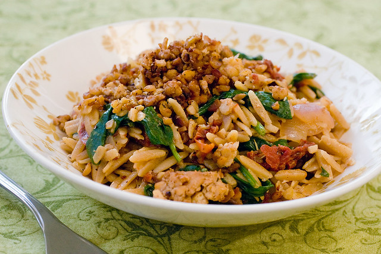

Tempeh Orzilla

It all started in a dream...
One night I had a dream. The evening before I had my usual tumbler of absinthe and grain alcohol, and it was those two angels that sang me to my rest that day. My dreams were dark and mysterious.
I woke up in a cold sweat at midnight, beads of perspiration on my brow, a clanging of bells in the distance and only one image clear as day in my mind: this dish. Be it from God or Satan, this dish is divinely inspired, and so I share it with you.
Ingredients
- 8 oz tempeh
- 8 oz orzo
- 1 tablespoon olive oil
- .5 tsp dried coriander
- .5 anise seed
- 1 Tb soy sauce
- 2 tsp olive oil
- One small onion, thinly sliced
- 4 cloves garlic, minced
- .5 c sundried tomatoes, the dry kind
- .5 tsp dried rosemary
- 1 c. dry white wine
- .5 tsp salt
- Fresh black pepper, but the stale stuff you have in the pantry is fine too
- 1 c. veggie broth
- 2 Tb nooch, aka nutritional yeast, aka the stuff your mom used to add to her orange juice for some reason
- 3 c baby spinach. (You may think this is too much. But only cowards think that.)
Instructions
While these steps may seem arbitrary, please follow them well to ensure nothing bad happens.
- To prepare the tempeh: For time management, I steam the tempeh first, and prep the veggies, then rinse out the pot and boil salted water for the orzo. So, tear the tempeh into bite sized pieces and steam for 10 minutes. Set tempeh aside and proceed with the recipe./li>
- Tempeh rd. 2: Preheat a small pan over medium heat. Saute tempeh in oil for about 10 minutes, mashing the tempeh into crumbles with your spatula as you go. Add the spices and soy sauce, and saute another 2 minutes, then turn off the heat and cover until ready to use.
- Pasta and Sauce: Boil orzo until al dente, then drain.
- In the meantime, preheat a large pan over medium heat. Saute the onion in olive oil with a pinch of salt until soft, about 5 minutes. Add garlic and saute for 30 seconds more.
- Add rosemary, wine and sundried tomatoes. Season with salt and pepper and turn the heat up to bring the sauce to a simmer. Let simmer until reduced by about half, 5 minutes or so.
- Add broth and yeast and warm through. Then add the spinach in handfuls, letting each batch wilt before adding the next. Cook until spinach is thoroughly wilted then turn the heat off, add the orzo, mix well, and serve topped with tempeh crumbles.
Back home?
All credit for this recipe of course goes to The Post Punk Kitchen, this is a loving parody.